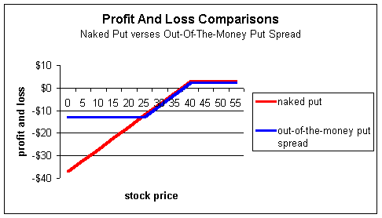
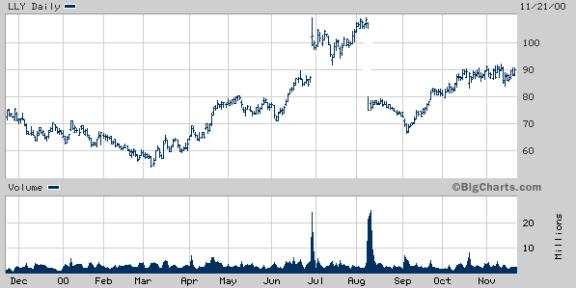
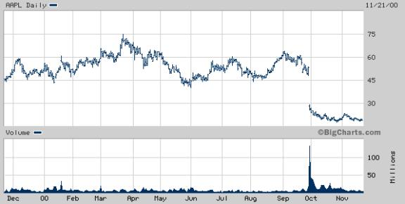
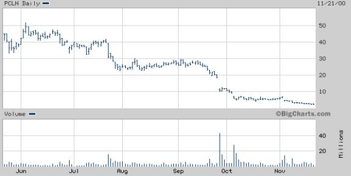
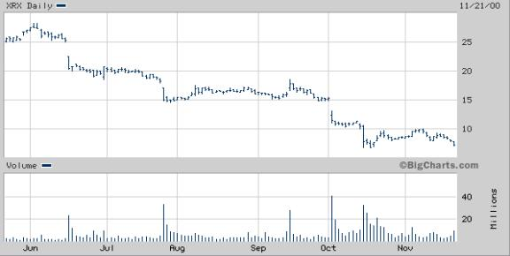
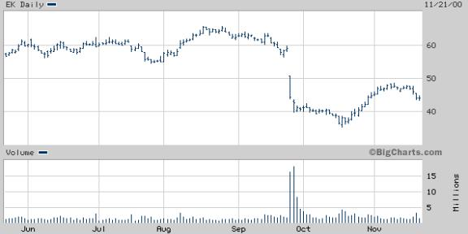
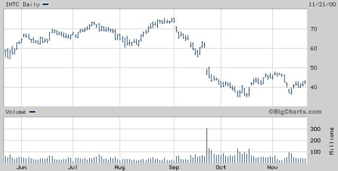

Naked Put Alternatives
Spreads as an alternative to naked puts
This section probably belongs under "Basic Spreads," but it is so powerful we feel it qualifies as its own strategy. It is one that is highly overlooked, even by the most seasoned investor.
If you ever use the strategy of naked puts, you will want to reconsider once you see the difference a spread can make!
Naked put strategy
As a review, recall that the strategy of selling naked puts is actually neutral to bullish. If the stock sits still or rises, the trader will profit by the amount of the initial credit. However, many traders add a twist to this strategy and use it as a way to purchase stock. They sell puts on stocks they do not mind owning if the put is assigned. Because of this, they feel it is a win-win strategy. If the stock rises, they keep the premium; if it falls, they got paid to buy a stock they wanted to buy anyway.
It is these investors we want to target in this section. We'll show you an alternative strategy for selling naked puts.
In fact, this strategy is especially useful for investors who wish to sell naked puts (which requires level 3 option approval) but only have approval to enter spreads (level 2). This strategy allows you to effectively sell naked puts in a level 2 account!
Using far-out-of-the-money spreads
Assume you are willing to buy 1,000 shares of Intel (INTC) currently trading around $42-1/2. Instead, you elect to sell a naked put, and the Jan $40 put is trading for $3. If you sell 10 contracts at $3, you bring in a credit of $3,000 and keep this amount regardless of what happens to the stock. If the stock should fall below $40, the strike, you may be required to purchase it at $40 if the long position decides to exercise. From a profit and loss standpoint your max gains and losses are as follows:
Maximum gain: $3,000
Maximum loss: $37,000
The most you can make is $3,000, but the risk is that you may be forced to buy stock at $40, which theoretically, could be worthless. You offset this $40 loss with the initial credit for a max loss of $37,000.
Now I know some of you are saying that Intel will never go to zero, so the argument is invalid. Well, it's probably true that it won't go to zero, at least anytime soon, so that may not be a probable risk. It is, nonetheless, the worst that can happen from a naked put, and that's how we have to base our decisions. Besides, there are many newer companies that can go very close to zero even though they were high-fliers at one time, so the risk is very real. Microstrategy (MSTR) rose from $7 to over $300 within a year -- only to return to $3 for the longest time. Currently, it is trading around $16- 1/2. If you sold the $300 puts, believe me, it felt like worthless stock no matter how much you received for the put. Iomega (IOM) went from $3 to over $100 in a short time and back to $3 even quicker. Egghead.com (EGGS) fell from $55 to the current price of $1-1/2. There are numerous examples, so please do not discount the maximum loss zone.
Back to the example. Let's now compare a trader who enters a spread order. He will sell the $40 put for $3 but simultaneously buy a far-out-of-the-money put, say a Jan $25, trading for $1/4. Because these are simultaneous orders, it's very likely to get a better fill between the two prices, but we will ignore that for now.
From a profit and loss standpoint:
Maximum gain: $2,750
Maximum loss: $12,250
This trader will take in a credit of $2,750 instead of the $3,000 the naked put trader received. This is because the spread trader will use $1/4 ($250) of his proceeds to buy the $25 strike put. In doing so, he now eliminates 25 points of risk to the downside. His maximum loss is only $12,250 versus $37,000 for the naked put.
The result is this: The naked put trader increased his returns by only 1/4 point in return for accepting an additional $24,750 potential loss ($37,000 versus $12,250). That is a very expensive 1/4 point.
Naked puts are a great strategy, especially if you are selling against stocks you would like to buy regardless. However, when things go bad, they can really go bad. This is the real risk of naked put writing. Using spreads can eliminate this risk cheaply.
Comparing the two profit and loss diagrams:
We see the two traders are virtually identical for all stock prices down to $25. In fact, they are only separated by 1/4 point, which was the difference in initial proceeds. However, if things go bad and INTC falls below $25, the spread trader will be very happy to have the long $25 put as insurance.
Which profit and loss diagram looks more appealing to you? Would you pay 1/4 point for it?
In addition, most brokerage firms will charge you the lesser of the full spread requirement (difference in strikes less the credit) or the naked requirement. So you will never be worse off, from a margin standpoint, with the spread order. Granted, it will cost you an extra commission, but in most cases, this will be well worth it.
Using far-out-of-the-money spreads as an alternative to naked puts is a form of catastrophe insurance. The trader in the above example is "insured" for all prices below $25. Again, it is unlikely for Intel to fall below this point, which is why the markets are pricing the $25 put at $1/4. However, when using any form of insurance, it is wise to buy insurance on high-severity and low-probability events, and that's exactly what a far-out-of-the-money put spread does for you; it insures against low-probability catastrophes.
Take a look at the following charts to see just how big and fast a catastrophe can happen!
Headline: Lilly shares fall more than 31% as ruling speeds generic prozac (8/09/00)
Headline: Apple computer falls more than 52% on 4th-quarter earnings estimates (9/28/00)
Headline: Priceline.com down 42% on 3rd-quarter estimates (9/27/00)
Headline: Xerox down 26% as sales decline and 3rd-quarter loss expected (10/03/00)
Headline: Eastman Kodak falls 25% on profit warning (9/26/00)
Headline: Intel falls 22% on 3rd quarter revenue warning (9/22/00)
Headline: Lucent shares fall 23% on 4th quarter earnings (10/10/00)

Hopefully you will see far-out-of-the-money put spreads as an enhanced alternative to naked put selling. Many investors have gone broke selling naked puts on "good" companies. However, good companies do not always report good news as the above charts demonstrate. It is during these times the value of the far-out-of-the-money spread strategy will be realized.